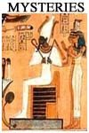
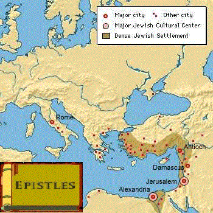
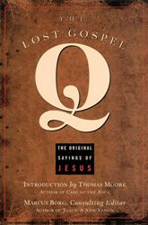
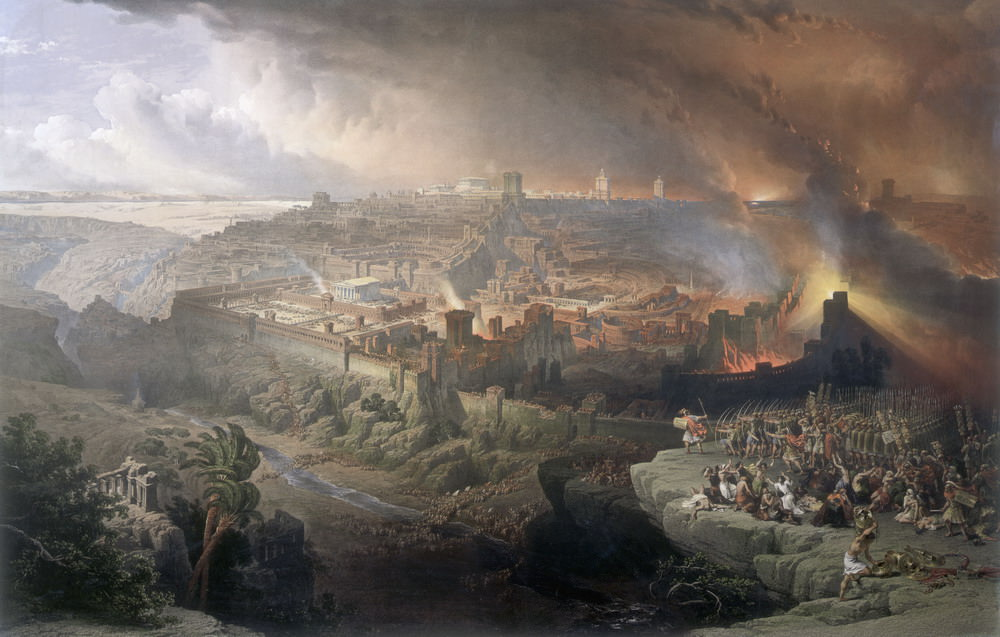
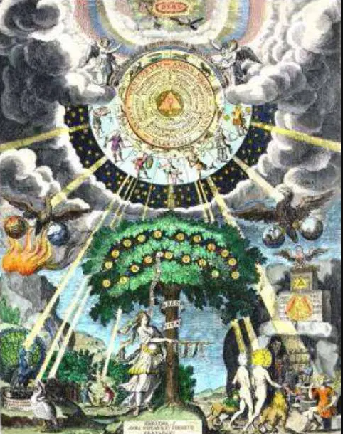

Christianity evolved from a MC to a HJ
After examination of everything the Epistles and the Gospels say about Jesus,
along with the religious, philosophical and literary context of the time, this study gives its conclusion in a form of
probability assigned to each possible theory on Jesus.
- 90% - Christianity began with a mythical Christ.
- 9% - only a man who his followers claimed had resurrected.
- 1% - a miraculous prophet
- Negligible - God
Then, after taking into account the scientific & philosophical arguments exposed in Appendix: Non Historical Arguments,
this study decreased the probability of Supernatural to Negligible and Christianity to a plain Zero.
So, the final result is:
Who Was Jesus?
| Theory | A Deified Man from Galilee | % Wold Population |
This Study Probability |
|||
| Man | Cruci- fixion |
Miracles | God & Savior |
|||
| Christian | Famous | 35% | Zero | |||
| Supernatural | Famous |  |
20% | Negligible | ||
| Secular | Famous | |
|
35% | 1% | |
| Minor | |
|
10% | 9% | ||
| A Deity Historicized | ||||||
| Secular | Minor | |
|
|
Negligible | 30% |
|
|
|
|
Negligible | 60% | |
- This study supports the Myth theory developed initially by G.A Wells (although he owes a great deal to previous works) then E. Doherty and nowadays R. Carrier.
- The most popular secular theory today of the man deified gets only around 10%.
- The probability for non-secular hypothesis is negligible.
"I’m not a young earth creationist, flat-earther or holocaust denier. I have no time or respect for 9/11 truthers,
Kennedy assassination conspiracy buffs, or Obama birther types. There’s no way in hell the Moon landings were faked,
and climate change denial absolutely drives me up the wall... I despise all manner of bogus pseudoscience, pseudo medicine
or pseudohistory.
The truth is, it’s not because of any “fundamentalist atheist” agenda I harbor, or because I haven’t studied the evidence enough that I put up with the aggravation (and believe me, it can be extremely aggravating).
...
I choose to remain relegated to the minority for just one reason: because I think it’s the only position that best explains the problematic evidence for Christianity’s origins. Period. And as I’ve said before, I’ll gladly change my mind if some new evidence overturns everything – but honestly, I don’t think that’s going to happen."
So why would I want to be a Jesus mythicist?
Isn’t that just another brand of pseudoscholarship?
A fringe position in biblical studies, thoroughly debunked by all reputable scholars long ago?"
...The truth is, it’s not because of any “fundamentalist atheist” agenda I harbor, or because I haven’t studied the evidence enough that I put up with the aggravation (and believe me, it can be extremely aggravating).
...
I choose to remain relegated to the minority for just one reason: because I think it’s the only position that best explains the problematic evidence for Christianity’s origins. Period. And as I’ve said before, I’ll gladly change my mind if some new evidence overturns everything – but honestly, I don’t think that’s going to happen."
Fitzgerald, David. Jesus: Mything in Action, Vol. I p. 29
The Birth of Christianity Timeline
Estimated probaility: 90%
-
Before 20 CE - A Jewish apocalyptic sectWe know there was a multitude of Jewish sects in the diaspora with some Hellenic synchretism that were worshipping a Son of God or in other times a Son of Man or even a mystic Messiah. Among others, these celestial figures existed in the seven spheres of heaven. Some pretended they could hear them or have vision or even been transported to these layers above the sky.Proto-Christian texts The Odes of Solomon, The Shepherd of Hermas.Some Gnostic literature.Jewish Apocalyptic Literature:
- 2nd century BCE or after
DanielThe Testament of the Twelve Patriarchs1 Enoch2 EnochJubileesThe Sibylline Oracles (2 BCE - 7 CE)
- 1st century BCE or after
Apocalypse of ElijahThe Martyrdom of IsaiahApocalypse of Zephaniah
- 1st century CE or after
the Apocalypse of AbrahamAscension of IsaiahWith Hellenic elementsOne of these sects was preaching the end of the world and syncretized the highly anticipated Jewish figure of the Messiah with an intermediary between God and mankind.He was a celestial being, a revealer, creator & sustainer of the universe and redeemer, like the Jewish Logos, another mysticism of the time.Paul was presumably persecuting them.20-40s CE - An Act of SalvationThis act of salvation was known by re-interpretations of the Scriptures and visions, Cephas (=Peter?) being the first:

"Christ died for our sins according to the Scriptures, that He was buried, that He was raised on the third day according to the Scriptures, and that He appeared to Cephas and then to the Twelve. After that, He appeared to more than five hundred brothers at once, most of whom are still living, though some have fallen asleep. Then He appeared to James, then to all the apostles. And last of all He appeared to me also, as to one of untimely birth."1 Corinthians 15:3-8"A small fringe sect of Jews, probably led by a man called Cephas, came to believe this deity had undergone a salvific incarnation, death and resurrection in outer space, thus negating the cultic role of the Jerusalem temple... They also came to believe that through this act their salvation had been secured through the defeat of the demonic world order, so long as they shared in that sacrifice metaphysically through baptism and ritual communion, a concept already adopted by many similar cults of the time."R. Carrier On the Historicity of Jesus p.60730-60s CE
- Preaching a Mythical ChristAfter Paul got a vision of Jesus (by hallucination mushroom?) and got possessed by him, he spread this faith in the Lord, Christ, meeting on his way other apostles and leaders like Barnabas, Apollos, Cephas, James and John who didn't add anything to his message.The records testify of a sect already widespread from Rome to Alexandria.1 Thess., 1 Cori., 2. Cori, Galat., Romans, Phillip. & PhilemonQ?: An hypothetical List of sayings:
Around the same time, a collection of sayings with little context could have been written near Galilee. Some of them could originate from a leader/founder of a counter-culture movement around 30 CE in Galilee. But there is no crucifixion, death and resurection and almost no stories including no miracles until the last layer.In this mythic paradigm, we estimate the probability that such a figure existed at around 1/3. However, whoever was this Q Jesus, he has nothing in common with the Mythical Christ of Paul above, so unrelated to the birth of Christianity.66-74 CE - War and Destruction
The Romans destroyed the Temple and burnt Jerusalem. After the war, most of the apostles of the generation of Paul would be dead, knowing their age and risky life.Estimation of Casualties and losses for this war combined with the Bar Kokhba revolt (132-136 CE) is approximately 350,000 deaths, which would be about one third of the original population.Matthew White, The Great Big Book of Horrible Things- 74-85 CE - A Founding Myth that rewrites history
Following Paul's visions, some attributed to this Christ a couple of new sayings, or shifted his nature towards a figure of the indefinite past. But the turning point happened when an unknown member of the sect devised a brilliant bit of religious syncretism. He created a story of the exalted Pauline Christ at a particular date and time on earth (possibly merging a fictional or not Q founder) and fashionned the passion story whole cloth. The story of Jesus of Nazareth is an allegory full of symbolism and midrash. It doesn't make sense without its folklore.Gospel of MarkOther canonical Epistles are written without mentionning any HJ:Colossians, Hebrews85-120 CE -The Story MultipliedAfter Mark, two other writers enlarged on the first man's tale. They borrowed much of what he had written, reworked it in their own particular ways and put in some additional material (Q).Gospels of Matthew and LukeAround the same time, new canonical Epistles were written without mentionning any HJ:James, 2 Thessalonians, Ephesians, 1 Peter, Revelation, 1, 2 & 3 John, JudeOther Christian records are still lacking any HJ:Didache, 1 Clement- 110 CE-300 CE - Wide Diversity and Fight

Christianity was extremely diverse with plenty of contradictory claims. They are all testimony of the fervor, creativity and diversity of religious thought at that time.New canonical Epistles were still written without mentionning any HJ:1 & 2 Timothy, Titus, 2 PeterNon canonical Christian records without mentionning any HJ:Odes of Solomon, Hermas, Apoc. Peter, Secret James...Christian records mentionning a HJ:Ignatius, G. Thomas, Preach. Peter, Quadratus Athens, Aristides, PapiasThe story and characters were reused by many communities as attested by the 30 extants Gospels (more than 50 were written) and 16 extant Acts. See Early Christian Writings byAfter producing three epistles, the Johachim community wrote the Gospel of John, the last canonical life of Jesus which is very different and contradicts the synoptics all the time.Heresies like Marcionism or Docetism were sometimes more popular than Catholic othodoxy. Something had to be done to ensure the cult of Paul is based on Jesus of Nazareth. The answer came with the Acts of the Apostles, one of the 16 Acts, a fairy tale and propaganda novel written maybe by Luke. There, Paul is definitively attached to the Gospels tradition.It is easy to see that the beginning of Christianity looks more like a vast synchretism between many different beliefs than the single central point in time the Gospels tradition is pushing. Still, by the end of the 2nd Century, almost everyone who followed the religion of these storytellers accepted their work as an account of actual historical events and a real historical man.- 312 CE-today - The Victorious Sect
The conversion of Constantine in 312 CE changed everything.
In 324, when the Catholic Church acquired absolute political power under the Constantines, opponents were compelled by force to fall in line. As the threat of death, prison, or dispossession was used to eliminate opponents, "disapproved" texts were collected and burned, or simply never copied and thus left to disintegrate, never to be read again."Then, for about 1,500 years, theological correctness was permanent and timeless, isolated from its historical origins and ultimately proceeding from the will of God. Nothing in the personal experiences of the great figures of early Christianity, such as Paul or the evangelists, would have disturbed this inspired pursuit of the truth."E. DohertyCreditsMost material is taken from Earl Doherty's books and website Jesus PuzzleRelated Websites:- Richard Carrier
- Neil Godfrey's Blog
- R.G. Price
- Robert Price
- Michael A. Turton
- Kenneth Humphreys
- Peter Kirby - Early Christian Writings (not Myth)
- Scientfic Method - The Gospels are Literature, not History
I highly recommend these books and documentary:In 1971, with his first, sensational book, The Jesus of the Early Christians: A study in Christian origins, G.A. Wells embarked on a single-handed enterprise to revive the old thesis of German scholarship "fiercely debated" at the turn of the 20th century -- "Die Frage nach der Historizität Jesu", whether Jesus ever existed.After WWII, with Kalthoff, Robertson, W.B. Smith, Drews dead, Couchoud retired, Schweitzer in Gabon, the debate went into dormancy.The personal genesis of Well's ideasWells's interest started with his year abroad in Switzerland in 1946 as a 20-year old student of German, lodging with a Swiss Protestant pastor who was a pupil of Albert Schweitzer (still very much alive then, d. 1965). Wells was introduced to Schweitzer's momentous The Quest of the Historical Jesus - A Critical Study of its Progress from Reimarus to Wrede" (German:1906, English Tr.:1910), leading him to reflect on the question of the historical evidence for Jesus, and the lack of it, in the early Christian documents.It took Wells 20 years to complete his first book, and three years to find a publisher, Pemberton, a traumatic experience. But the 3,000-run sold out quickly, and his second book, Did Jesus Exist? (1975) , was easily accepted.Importance of GermanWells found German even more important than ancient Greek: His expertise allowed him to read in the original the great German historical critics (mostly never translated into English): a massive amount, on both sides of the debate, of the most comprehensive scholarship in the world (stamped with the famous "Deutsche Gründlichkeit", "German thoroughness") -- giving him a marked advantage in promoting the non-historicity thesis to modern English readers.He also gained exposure to the Dutch Radical School, through German translations (and English ones in "Encyclopaedia Biblica", and Thomas Whittaker's book).From an Amazon ReviewThen E. Doherty started on this idea after he encountered a serious presentation of the theory by Professor Wells.Afterwards R. Carrier switched position from HJ to MJ after he read the Jesus Puzzle by Doherty (like me).This Website By Vincent Guilbaud Who am I?I am just an ordinary man with nothing to lose.I was born in 1967 in a Catholic family in Angers, west of France. Like my siblings, my experience with religion as a child or teenager was rather sweet -there is no desire of taking any 'revenge' here. I keep mostly good memories of that time, but starting the age of fourteen, I was certainly more interested to understand the phenomena than to simply believe in it.During my Engineering school in Paris, my faith decreased dangerously, as it doesn't seem to be compatible with science and my better understanding of the world, despite I was living the 2 first years in the seminary of St Sulpice! Then, I still got married at church and attended several protestant masses in Rueil Malmaison, driven more by curiosity.It is only in 2002, after having moved to NC in the US, maybe partly because of 9/11/2001, that I decided to study the Jesus question to find by myself where I am on the subject. Well, I had no idea where I was putting my feet! Knowledge makes you see the world differently! I quit Christianity rapidly and became fascinated by this incredible historical enigma of Jesus! A puzzle where all pieces stick together the best in the Myth scenario developed since 1971 by Wells, Doherty and Carrier.I went on several discussion forums in France and the US to find how little the experts know about the Myth theory and its arguments. I also realized rapidly that a lot of people have too much vested interest to work honestly in this domain of research. I read several books and regularly spend time on the web searching for whatever I can find on the subject.Finally, I published my study in the form of this website. It is a vulgarization of a very detailed theory that has more than one thousand pages. It popularizes and summarizes the work of E. Doherty and others on the origin of christianity, and shows that their theory is the best explanation for the records we have.As we have seen in chapter 1 a Gap of Knowledge, there is a vast ignorance on the result of secular scholarship, upon which this study is largely based. There is a considerable degree of overlap between the work of the most thoughtful mythicists and any responsible approach to Christian sources, since both share a remarkable dose of skepticism.IndexScripture IndexGalatiansSummary1. Where are we today?2. A Critical BugPhilippiansSummary2. A Critical Bug3. Epistles1 Corinthians1. Where are we today?3. Epistles2 Corinthians1 ThessaloniansRomans2. A Critical BugEphesiansColossiansHebrewsJames2. A Critical Bug1 Peter1 Timothy2. A Critical Bug2 Timothy3. EpistlesTitus1 John2 John3. EpistlesJude3. EpistlesRevelationMark2. A Critical BugNo Parable Mk 4, Mt 13, Lk 8Matthew2. A Critical BugLukeJohn3. EpistlesActsOld Testament1. Where are we today?
To Do: Chap 4. Gospels, chap 5. Outside the Bible, chap 6. DebattingOpen Popup menu to navigate other pages
- 2nd century BCE or after